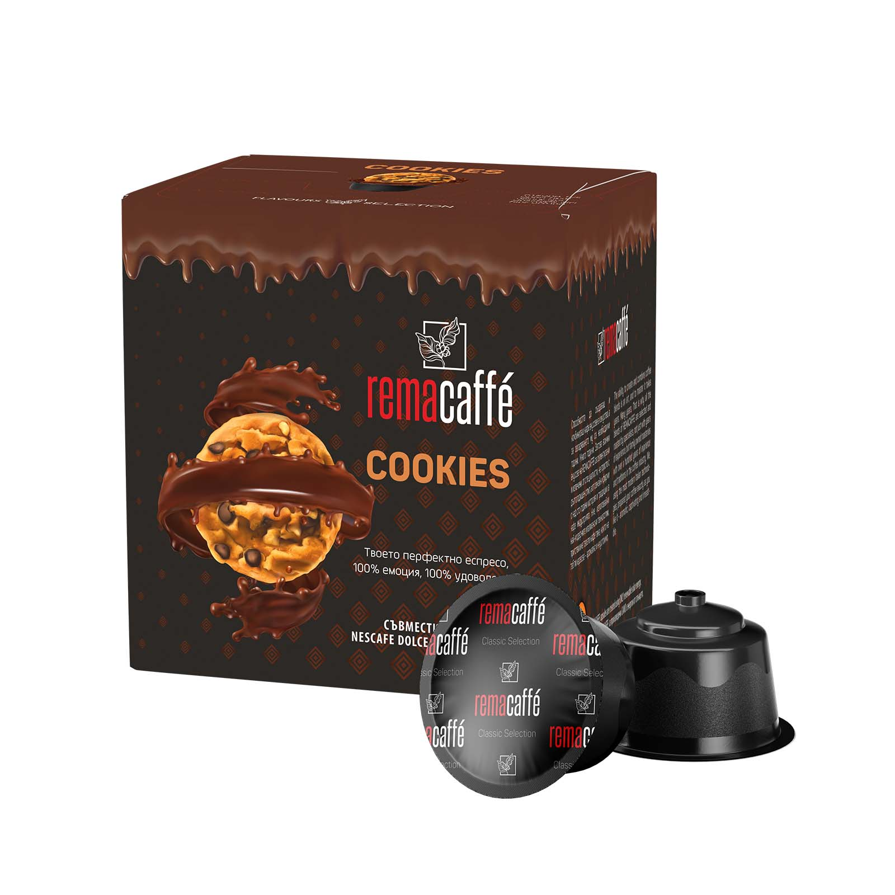

Chocolate cookies & espresso
A flavored coffee that keeps espresso at the center of the cup.


Chocolate-cookie pleasure in a 16-capsule format.
A 100% Arabica flavored coffee with the aroma of chocolate cookies and espresso, designed for Dolce Gusto compatible machines.
This coffee is part of the smaller Dolce Gusto assortment in EUspresso's first Rema Caffè shipment.
A flavored coffee that keeps espresso at the center of the cup.
Made for Dolce Gusto compatible capsule machines.
A simple way to make an ordinary coffee break feel a little more fun.
Rema Caffè roasts, grinds and packages its capsule coffee in Plovdiv, Bulgaria. EUspresso imports and supports the brand for the U.S. market.
A larger Dolce Gusto compatible box for easy single-serve preparation.
Produced by Rema Caffè in Plovdiv and imported from Europe.
Dolce Gusto complements the larger Nespresso Original assortment in the first U.S. shipment.